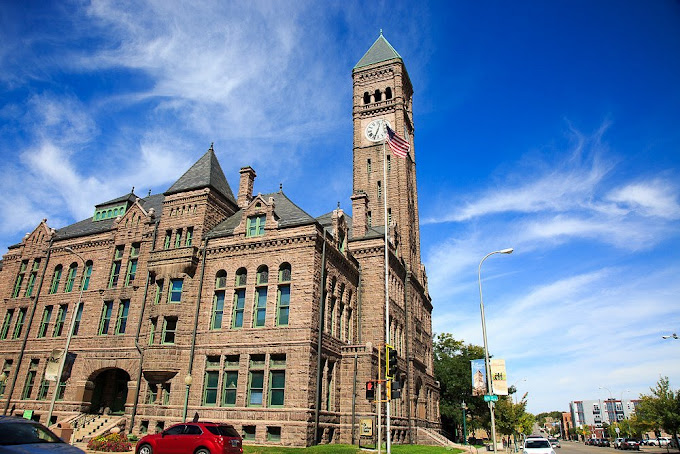

Why Sioux Fallls?
The city of water falls
Sioux Falls is named for the Sioux tribe of American Indians and the waterfalls of the Big Sioux River, located a few blocks from today’s downtown district. The Sioux tribe named the water Minne Waukon (sacred water). The falls remain a popular local landmark and tourist attraction. Many of the venerable reminders of Sioux Falls´ pioneer past were constructed out of the region’s distinctive rose quartzite and serve as testimony to the founders´ hard work, vision and commitment to community. Many of the city’s older buildings made of this rose quartzite are still standing today.